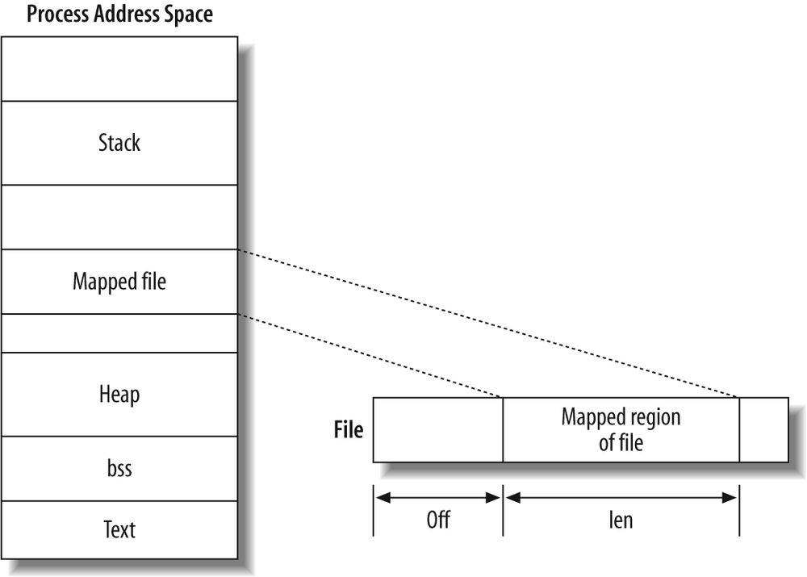

再次再次预告：期中测验
4.20 (下次课) 随堂测验 (14:00 开始, 16:00 结束)
- 一道上机题 (50%)
- 并发编程 (
threads.h), Online Judge 提交，但无评测结果- 一个问卷 (50%)
- 问卷系统提交
自觉维护学术诚信
- 正确性不作为评分依据
- 独立完成 (不借助互联网搜索、不讨论)
- 如有特殊困难不能参加，请由辅导员向我说明
评分标准
- 按时提交，得 100%
- 当天提交，得 80%
- 周三 (4.22) 前提交，得 70%
本讲概述
之前我们花了很多次课讲进程
- 进程 = 运行的程序 = 状态机的执行
- 进程管理 (fork, execve, exit) = 状态机管理
- 进程的地址空间 (分页机制, mmap, 动态链接和加载)
- 操作系统中的进程管理
- 进程调度的机制 (中断/上下文切换) 和策略
- 如何管理进程的内存 ← 最后一个问题
如何在操作系统里实现 mmap？
- demand paging 和 mmap 的实现
- 虚拟存储: OS 给我们的礼物
- 动态加载: ltrace 和
LD_PRELOAD - copy-on-write fork
- 动态加载: ltrace 和
进程的地址空间：回顾
进程视角的地址空间
使用 pmap (/proc/[pid]/maps) 可以查看进程的地址空间
- 进程运行时越权访问会导致 Segmentation Fault (
SIGSEGV) - 地址空间中的 “段” 使用 mmap 系统调用创建

进程视角的地址空间
mmap 的神奇之处：几乎总是在瞬间完成
- 用 mmap 申请 8 GiB 内存空间
- 用 mmap 映射整个磁盘 (128 GiB)
一个很自然的问题，mmap 到底是如何在操作系统上实现的？
实现 mmap: 借助分页机制
分页机制
- 一个存储在内存中的函数
- 把 “虚拟地址” 翻译成 “物理地址”
- 通常是 Radix Tree
- 操作系统代码可以自由更换
- 访问 不允许的内存，产生异常 (page fault)
mmap 不需要分配任何实际的页面，只要 “记录” 下映射这件事发生
- page fault 的时候再做 lazy 的映射 (Lab 4)
- 这就是 demand paging (on demand 加载页面)
struct mm_area { _Area range; // 内存映射的区间 int prot, flags, fd, offset; // 内存映射的属性 struct page *pages; // 用于遍历所有映射的页面 }; struct task { struct mm_area areas[16]; ...
请页调度 (Demand Paging)
Demand Paging: 按进程需要分配页面
操作系统可以看到所有的物理页面
- Lab1: kalloc/kfree 我们已经理解了这一点
- 所有的 free pages 都是可用的
- 用这些 free pages 组成进程的 和它们实际的内存
- 进程创建 (execve) 时只要准备好
mm_area就行- 开始执行后会 page fault
- page fault 会实际调用 kalloc 分配一页，并填入正确的数据
这就是为什么 Lab1 那么重要了
- 它是整个操作系统运行的基础！
Demand Paging: 分页机制的另一个用途
一个非常聪明地想法，更好地利用分页机制
即便一个进程已经分配了一个页面
- 我们也可以随时任意地 “hack” 进程的地址空间
- 把页面的数据 “swap out”
- 保存到 persistent storage
- 取消这个页面的映射
- 之后进程 page fault 的时候再加载回来
- non-present pate table entry 可以用来存储索引信息
思考题
- 为什么这件事 make sense?
- 基本假设：程序的运行有 locality
- 在短时间内总是访问所有资源的一小部分 (working set)
- 基本假设：程序的运行有 locality
- Linux swap (kswapd)
- memory low watermark 时开始把页面搬运到持久存储
Swapping: Why Make Sense?
在过去
- 内存很贵、很小
- 希望运行程序总内存消耗可以 > 物理内存总数
- 内存不足的时候依然可以使用系统
在今天
- 这个需求不那么强烈了
- swapping 更像是一个让系统在高内存负载下不会 crash 的缓冲
- 但是 NVM (Non-Volatile Memory) 来了！
- 与 DRAM 接近的吞吐率、更低的功耗、更好的性价比、巨大的容量
- 但是，更高的延迟，以及更短的寿命
- A. Eisenman, et al. Reducing DRAM footprint with NVM in Facebook. In Proc. of EuroSys, 2018.
Swapping: 策略
Swapping 的策略设计：
- 当我们的系统内存面临不足时，把哪些进程的哪些页面 swap out？
就像调度策略——Everything is about prediction.
- 最优策略 (Belady's Algorithm)
- swap out 未来最后使用的页面
- (如果我们能预测未来的话)
- (以及公平性好像更难保证了……)
- 实际：我们只要能近似准确地预测未来
- 内存不足时把未来大概率不使用的页面 swap out
- 提前把可能使用的页面换入 (prefetch)
- page fault 时 swap in (进程才能继续执行)
Swapping: 策略和实现
FIFO: First-In First-Out
- 明显不太好——有些 “hot” 的页面 (代码/数据) 显然不该被 swap out
Random
- 明显不太好——不小心就把重要的页面换出去了
LRU (最近最少用，不错的预测)
- 但不好实现 😂
- 注意 “LRU” 需要我们知道怎么 “use” 内存
- “use” 内存的方式是一条 load/store 指令！

- 以及 NVM, AI, ... 的到来
- 可能会 fundamentally 改变计算机系统中的虚拟存储
虚拟存储: OS's Gift (1)
Shared Object 与外部符号
回顾还记得我们在代码课上的例子
- 启动 1,000 个进程，加载 128 MiB 代码
- page fault 时发现页面在内存中已经存在只读的物理拷贝
- 直接映射 (保留唯一的物理页面) 即可
Shared object 想调用函数，那就得查表
645: e8 c6 fe ff ff callq 510 <puts@plt>- 如果我们 hack 一下表的地址...
- 用一个 wrapper 替代表里的函数，我们得到了什么？
我们得到了 ltrace!
- ltrace 的行为是 “intercepts and records the dynamic library calls”
- ltrace 的 log 比 strace 更 “高层”
- 能观察到库函数一级的交互 (可能没有系统调用，例如 malloc)
More Wrappers...
如果两个动态链接库都定义了同一个变量……
libc.so-printflibfoo.so-printf
它们都被加载，会发生什么？
- “先到先得”
- RTFM: ld.so (8); dlsym (3)
在所库动态链接之前加载，是不是就可以 “劫持” 动态符号了？
- 插桩 (instrumentation)/钩子 (hooking)
我们的系统为我们提供了 LD_PRELOAD 环境变量
- 加载器会 “preload” 其中的共享库
- 使用 ldd (ld dependencies) 可以看到
LD_PRELOAD生效- 可以用来调试共享库等等
LD_PRELOAD Hooking: 例子
例子：简易版 lockdep.c
- lockdep: 得到每个线程的 lock ordering 并检查是否存在 AB-BA
- 只考虑
pthread_mutex_lock/pthread_mutex_unlock
- 只考虑
- 实现原理
- 先用
LD_PRELOAD占坑 - 程序中的 lock/unlock 将调用到我们预设的 hook
- hook 是对实际
pthread_mutex_lock/unlock的 wrapper - 但增加额外的记录
- hook 是对实际
- 先用
- 同理你可以 hook 任何其他库
- malloc/free
- ...
Takeaways and Wrap-up
虚拟化部分的一个小结
- 程序 = 状态机
- 操作系统 = 状态机的管理者
- 用硬件 (物理状态机) 实现多个并发执行的虚拟状态机
- 虚拟存储 + 分页机制：一个美妙的礼物
- 可以用来做各种你们可能没有想象到的事情
- hooking, copy-on-write, recovery, ...
- 可以用来做各种你们可能没有想象到的事情
复习题
- 尝试
LD_PRELOADhooking - 准备下周的期中测验